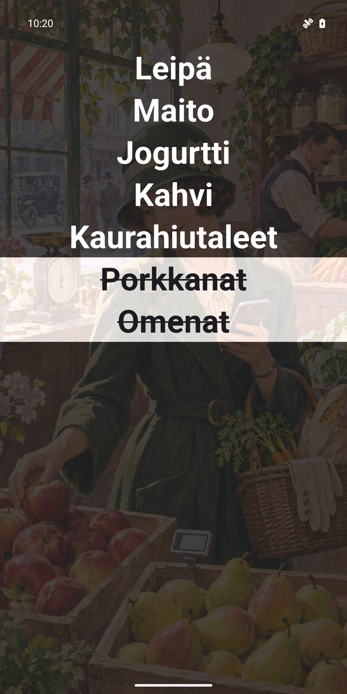
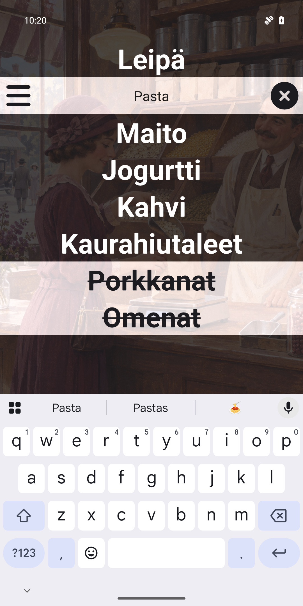
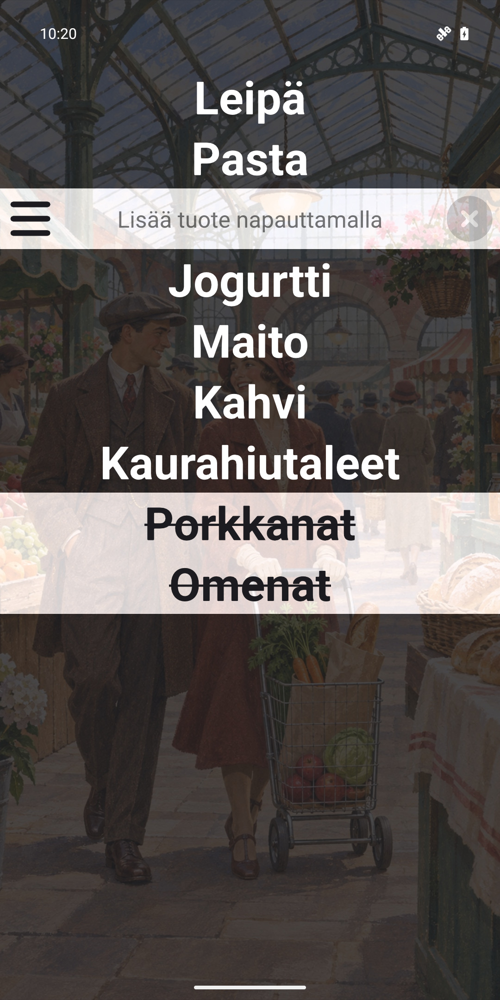
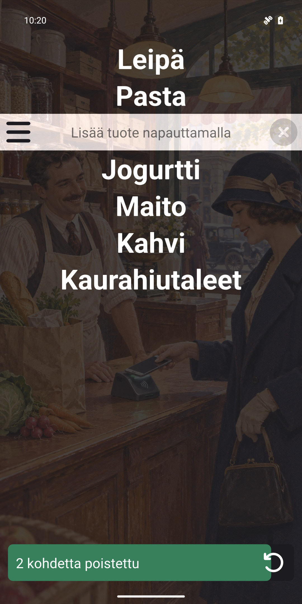
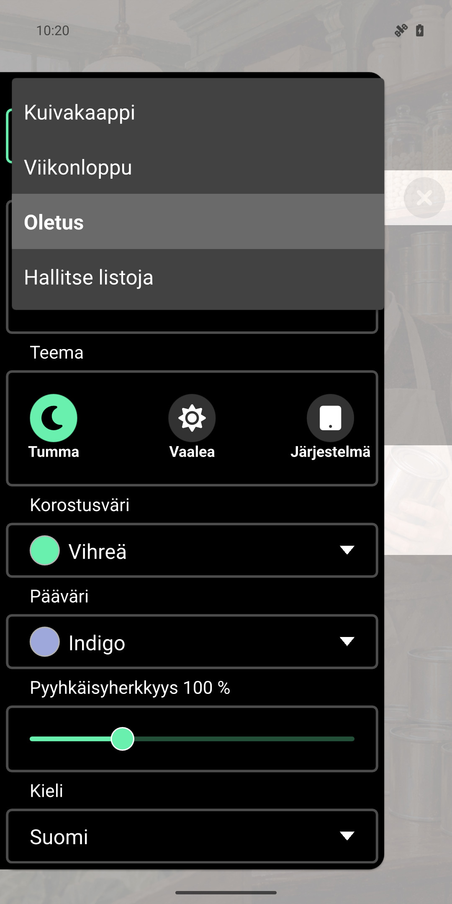
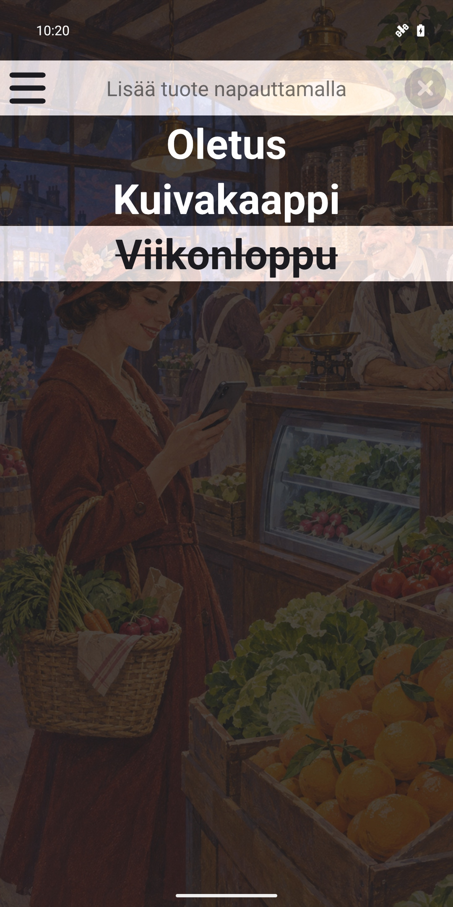
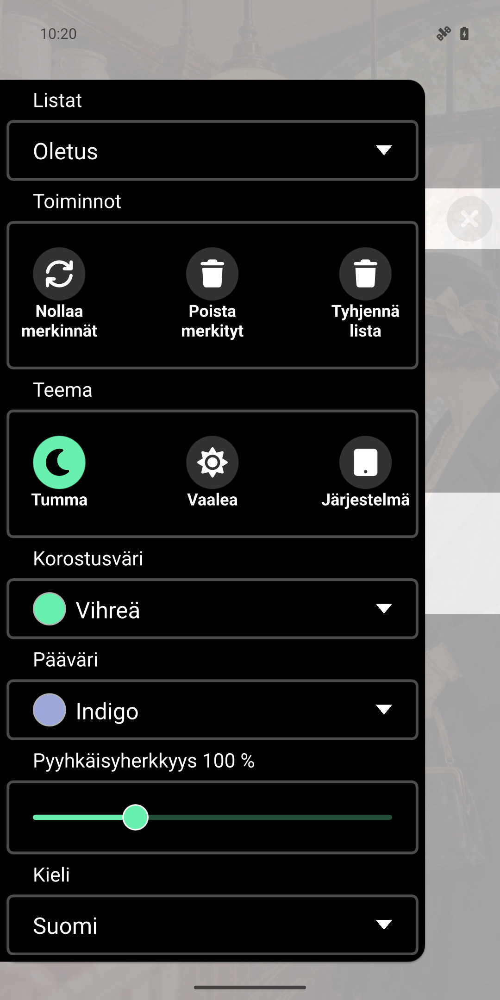

Pikaopas
Kirjoita ostoslista siihen järjestykseen, jossa kierrät kaupassa. Vaihda ostos- ja muokkaustilan välillä vetämällä listaa alaspäin.
Merkitse tuotteet ostosten aikana
Merkitse tuote pyyhkäisemällä sitä oikealle. Tuote siirtyy merkittyjen tuotteiden alkuun, heti ostamatta olevien tuotteiden alle. Pyyhkäise merkittyä tuotetta vasemmalle, niin se palaa merkitsemättömien joukkoon.
Voit perua pyyhkäisyn vetämällä rivin takaisin keskelle ennen kuin nostat sormen.

Lisää tuote tai muokkaa sitä
- Vedä listan yläreunassa alaspäin, kunnes tilanvaihdon kuvake vaihtaa väriä. Nosta sitten sormi. Palaa ostostilaan samalla eleellä.
- Napauta merkitsemätöntä tuotetta, niin syöttökenttä siirtyy sen alle. Napauta sitten kenttää ja kirjoita.
- Lisää tuote painamalla näppäimistön Enter-näppäintä. Näppäimistö pysyy auki seuraavaa tuotetta varten.
Muokkaa tuotteen nimeä napauttamalla riviä kahdesti. Voit myös sanella, jos näppäimistö tukee puhekirjoitusta.

Järjestä tuotteet ostosreitin mukaan
Paina muokkaustilassa merkitsemätöntä riviä, kunnes se nousee irti. Vedä riviä ylös tai alas ja vapauta se haluamassasi kohdassa.

Poista tuote ja kumoa poisto
Poista tuote pyyhkäisemällä sitä muokkaustilassa oikealle. Palauta viimeisin poisto napauttamalla kumoamispalkkia mistä tahansa kohdasta.
Voit kumota poiston 15 sekunnin kuluessa. Jos olet poistanut useita tuotteita, viimeisimmän poiston kumoaminen antaa edelliselle poistolle uudet 15 sekuntia. Listan vaihtaminen lopettaa kumoamisen.

Vaihda, arkistoi tai palauta lista
Napauta syöttökentän vasemmalla puolella olevaa valikkokuvaketta. Vaihda listaa kohdasta Listat tai valitse Hallitse listoja. Lisää lista syöttökentällä ja nimeä lista uudelleen napauttamalla sen nimeä kahdesti.
Arkistoi lista pyyhkäisemällä sen nimeä hallintanäkymässä vasemmalle. Merkitty lista poistuu valitsimesta, mutta sen sisältö säilyy. Palauta lista avaamalla Hallitse listoja uudelleen ja pyyhkäisemällä merkittyä nimeä vasemmalle.
Pyyhkäisy oikealle poistaa listan. Pyyhkäise vasemmalle, jos haluat säilyttää listan sisällön myöhempää käyttöä varten.


Käytä valikon toimintoja
- Nollaa merkinnät
- Säilyttää kaikki tuotteet. Merkitsemättömät tuotteet pysyvät alussa. Aiemmin merkityt tuotteet tulevat niiden perään keräysjärjestyksessä.
- Poista merkityt
- Poistaa merkityt tuotteet. Voit palauttaa ne kumoamispalkista.
- Tyhjennä lista
- Tyhjentää nykyisen näkymän. Voit palauttaa rivit kumoamispalkista.
Jos esimerkiksi merkitset ensin omenat ja sitten porkkanat, merkintöjen nollaus siirtää omenat ennen porkkanoita merkitsemättä jääneiden tuotteiden perään.
Listojen hallinnassa nämä toiminnot kohdistuvat näkymässä oleviin listoihin.
Valitse vaalea, tumma tai järjestelmän mukainen Teema. Valikossa voit myös vaihtaa korostusväriä ja pääväriä, säätää pyyhkäisyherkkyyttä sekä valita käyttöliittymän kielen.
